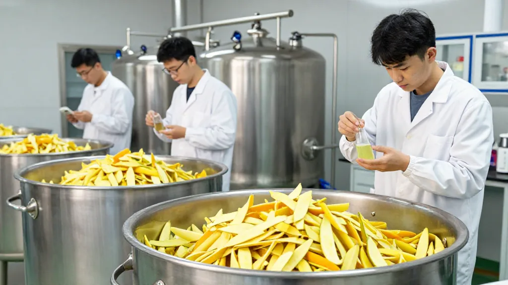
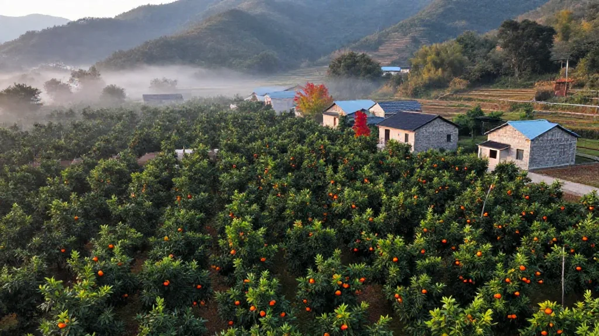
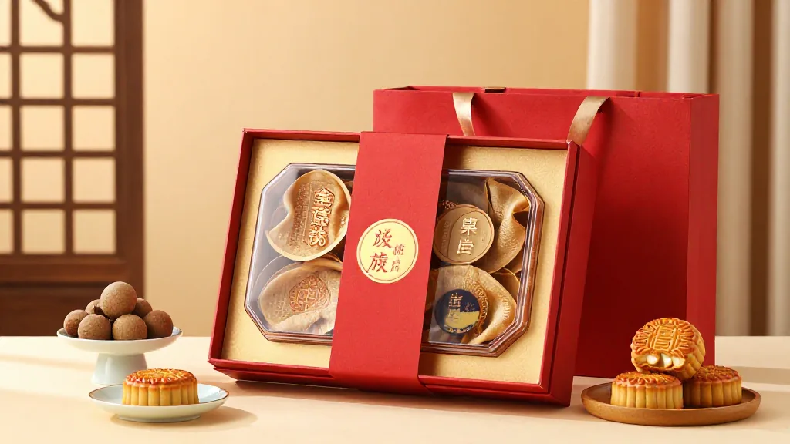

📰 導讀
中秋臨近，陳皮市場進入傳統旺季。假冒陳皮專項整治罰沒逾374萬元、柑肉廢棄物綜合利用項目正式啟動、有機新會柑認證邁出關鍵一步。央視曝光效應持續發酵，2026年新皮即將在下月大红季集中上市。
一、央視曝光後續：新會假冒陳皮專項整治累計罰沒374萬元

央視《財經調查》欄目於二〇二六年九月二十一日曝光陳皮市場亂象：部分商家將廣西「工藝皮」貼牌充當新會陳皮，年份虛標問題突出，單價千元的「年份陳皮」成本僅約七十元，暴利高達二十倍。
曝光後江門市市場監管局迅速跟進，截至二〇二六年七月八日，全市市場監管系統已累計檢查相關經營主體22,146家次，立案查處違法案件311宗，罰沒金額374.69萬元，集中銷毀涉案罰沒陳皮產品11噸。
影響分析
專項整治的高壓態勢，對中小作坊形成明顯震懾，行業合規成本上升。有分析認為，這將加速推動「經驗定價」向「證據定價」轉型，溯源體系完善的品牌將獲得更大市場份額。
二、新會柑肉綜合利用項目啟動：廢料變寶藏，預期產值70億

中秋前夕，新會陳皮產業傳來產業延伸好消息。新寶堂陳皮有限公司與五邑大學於二〇二六年四月正式簽訂產學研合作協議，共同攻關「新會柑肉綜合利用技術研發及應用示範」項目，目標是將每年約25萬噸遭廢棄的柑肉轉化為農業級有機肥和食品級酵素產品。
陳董介紹，該項目總投資3.8億元，廠房佔地面積8.3萬平方米，預計今年內酵素產品即可投產，將作為獨立子品牌嵌入「新會陳皮現代健康產業鏈條」。按其測算，這一項目有望為產業帶來高達70億元的預期產值。
影響分析
柑肉處理長期是新會陳皮產業的「雞肋」——剝皮後的柑肉酸腐難聞，既污染環境，清理還需付給環衛每車三十至五十元。綜合利用率提升後，「以皮帶肉、以肉養皮」的產業閉環將真正形成。
三、新會有機新會柑認證突破：百畝莊園衝刺行業首個
廣東溫和堂健康產業有限公司正在探索有機新會柑種植模式，其位於新會茶坑村的100多畝莊園有望成為全國第一個通過國家有機產品認證的新會柑種植基地。
溫偉成表示，二〇二六年七月已完成鮮果檢測，認證結果備受業內期待。該莊園全程採用國家有機食品標準，涵蓋土壤培育、柑苗種植、曬果晾皮乃至倉儲運營全過程，目標是做出真正綠色健康的「有機新會陳皮」。
影響分析
有機認證不僅是品質背書，更是打開高端出口和精緻農業市場的「金鑰匙」。若溫和堂認證落地，將為新會陳皮的高附加值路線再添一條新路徑。
四、數字化溯源升級：2026年度新會柑鮮果產量申報正式啟動
新會區農業農村局於二〇二六年七月正式啟動二〇二六年度新會柑鮮果產量線上登記申報工作，面向全區所有新會柑種植戶開展分月度產量報備。這意味著，每一畝柑園的產量數據將被錄入新會陳皮數字化溯源管理系統，從源頭鎖定可加工新會陳皮的總量。
新會區農業農村局鄉村產業發展股股長李建忠表示，精準鎖定鮮果總量，可從源頭杜絕市場上無限制虛標新會陳皮產量、銷量等亂象。
五、區塊鏈「數字身份證」：陳皮數據資產掛牌上市
二〇二六年三月十八日，前海鏈藏數據科技與江門市新會六真好陳皮生態農業有限公司聯合宣布，新會陳皮全鏈路溯源數據作為數據商品正式在深圳數據交易所掛牌上市。
該數據資產基於「六真標準」——真源頭、真產地、真年份、真品種、真生態、真陳化——為每一片陳皮賦予不可篡改的「數字身份證」。
影響分析
當種植、倉儲、流通等環節的數據被系統化采集、標準化治理、資產化交易，產業的信任邏輯便從「口口相傳」轉向「鏈上可查」。
六、2026年新皮上市在即：鮮果收購價成市場最大懸念

距二〇二六年新會柑大红季（預計十一月）不足兩月，產地端關於鮮果收購價的預測正在密集出爐。有產地自媒體披露，二〇二六年九月初已有部分非核心產區一級鮮果報價約2元/斤，較前兩年明顯回落。
按20斤鮮果出一斤陳皮的出皮率計算，2元/斤的鮮果對應約40至50元/斤的新皮原料成本。業內分析認為，若十一月非核心產區鮮果實際收購價落在2至3元區間，今年將是多年來囤新皮成本最低的一年。
但需注意的是，核心產區（梅江、東甲、天馬、茶坑等）因地租高昂（部分地塊每畝年租達3至4萬元），鮮果價格仍有望維持在8至15元/斤高位，核心產區與非核心產區的價格分化將更為顯著。
七、團體標準落地：產地識別與年份鑑定首次有標準化路徑
江門雙碳實驗室牽頭的兩項陳皮團體標準於二〇二六年七月正式落地，產地識別與年份鑑定首次有了標準化技術路徑，行業從「經驗定價」加速轉向「證據定價」。
業內人士提醒：消費者選購時可重點核對包裝上的國家地理標誌保護產品專用標誌、地理標誌證明商標準及執行標準號DB4407/T 70。同時，關注CMA檢測報告中橙皮苷、川陳皮素、橘皮素三項成分數據，是判斷陳皮年份真實性的最客觀依據。
八、中秋禮品市場啟動：陳皮禮盒迎來年度出貨高峰

中秋前夕，新會陳皮禮盒進入年度出貨旺季。多間本地品牌透露，八月至九月禮盒訂單量環比增長明顯，其中以3至5年陳皮禮盒和含溯源憑證的新皮禮盒最受市場青睞。
業內提醒：高價禮盒的溢價大頭是包裝和年份標籤，送禮選當年新皮加可溯源憑證的組合，品質更透明、也更經得起懂行朋友的檢驗。
結語
新會陳皮產業正處於「整治出清+標準重建+數字化升級」三重轉折疊加期。中秋旺季開啟後，市場關注焦點將轉向十一月大红季的鮮果實際收購價——這將是判斷二〇二六年陳皮市場走向的最重要單一變量。
對消費者而言，認準地理標誌雙標、核查CMA成分數據、優選可溯源產品，仍是中秋購皮最理性的三條原則。